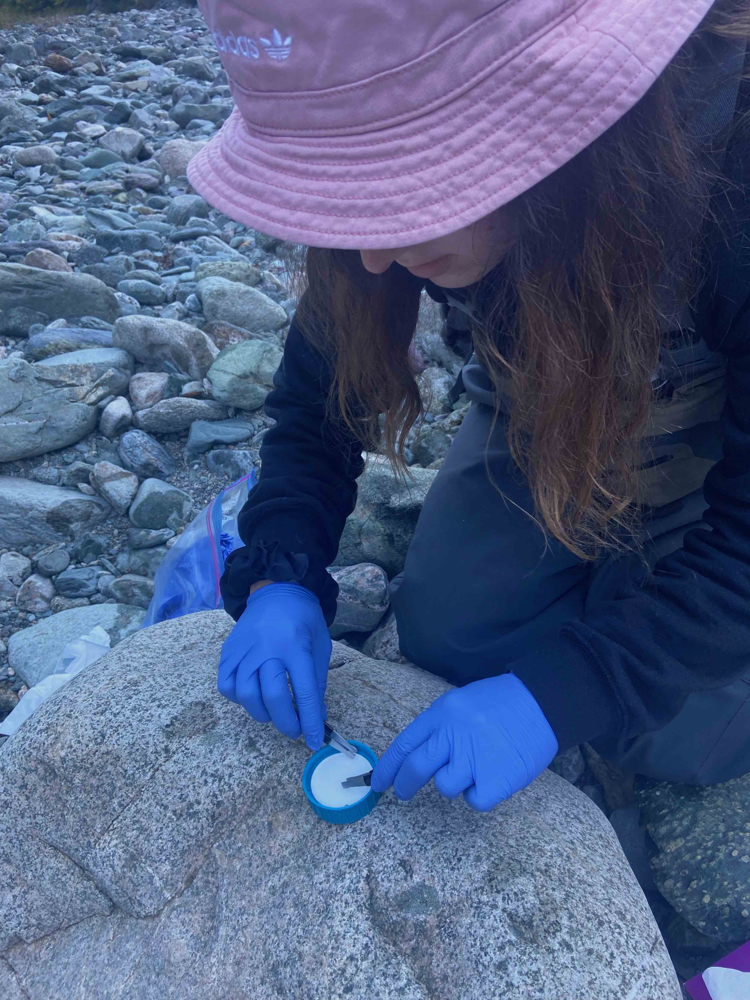

Research
eDNA Assays for Threatened, Invasive, and Ecologically Relevant Atlantic Canada Freshwater Fishes
I started my Master of Science degree January 2021, I started my Master of Science in Dr. Scott Pavey's lab at the University of New Brunswick Saint John. My MSc project developed eDNA quantitative polymerase chain reaction (qPCR) assays for 20 freshwater fish found in Atlantic Canada. The use of qPCR relies on species-specific primers and probes that are designed complementary to unique regions of the target species DNA. Using eDNA tools to supplement data from traditional sampling techniques holds a lot of primise to monitor freshwater fishes, however requires these assays to be rigorously tested and validated. My MSc project has developed 20 qPCR Then, I moved to the Maritimes for my MSc–currently completing the final stages of my project at the University of New Brunswick Saint John in Dr. Scott Pavey's lab. My project is in partnership with GEN-FISH, a national project funded through a competitive grant awarded by Genome Canada. Broadly, our aim is to determine the location and abundance of Canada's 200+ freshwater fishes, and measure how they fare in the face of increasing Anthropogenic stressors.
My project has developed eDNA qPCR assays using the mitochondrial Cytochrome B genetic marker for 20 freshwater fishes of ecological, economic and Indigenous importance in Atlantic Canada. I conducted eDNA field work at Fundy National Park, home of the Inner Bay of Fundy Atlantic Salmon. I applied assays I developed to eDNA samples taken at Fundy to prove their efficacy and utility as a monitoring tool for five species found in the river systems there.
Although my work focuses heavily on environmental DNA and freshwater fishes, I am more broadly interested in the genetic basis behind evolutionary change, population genetics and structure, and the effects of environmental stressors on gene regulation and expression.